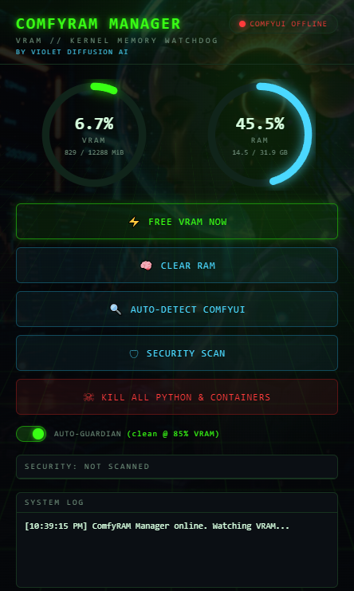
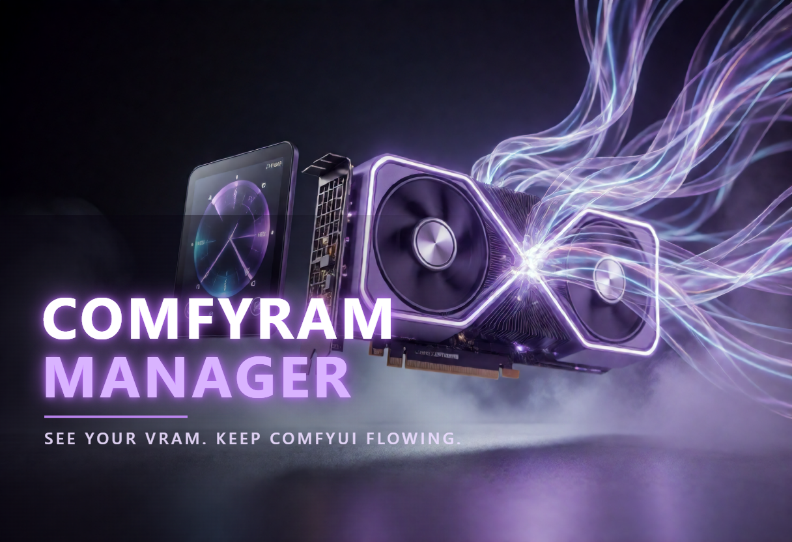

What it does
- Live VRAM and RAM rings, every 4 seconds
- Ctrl+Alt+F frees VRAM from anywhere
- Auto Guardian frees at 85% by itself
- Finds ComfyUI on its own, whatever the port
Screenshots

See and free the memory ComfyUI is holding, with one key.

